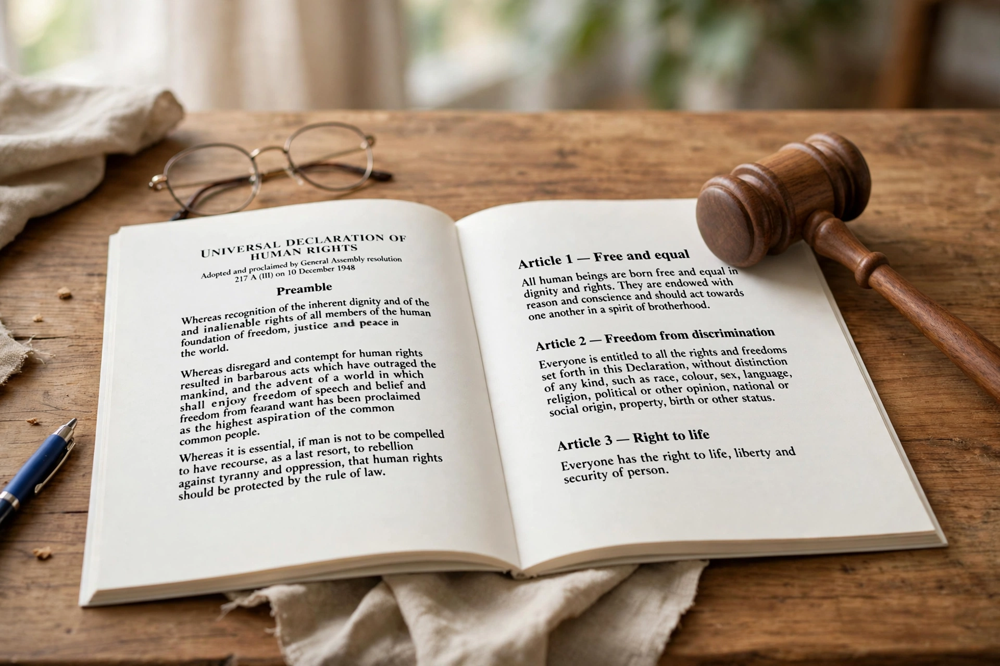

| Dignity | |
 | |
| Field | Ethics, philosophy of law, theology |
|---|---|
| Key texts | Universal Declaration of Human Rights (1948); Kant, Groundwork (1785) |
Human dignity is the idea that every human being possesses an intrinsic worth — an inherent right to be valued, respected and treated ethically — simply by virtue of being human. It is a central concept in ethics, law and political philosophy, and the foundational premise of modern human rights law.
In the Western tradition, dignity (dignitas) originally referred to rank or status meriting honour. Thinkers such as Pico della Mirandola, in his Oration on the Dignity of Man (1486), recast it as a property of human nature itself. Immanuel Kant gave the most influential modern account: in the Groundwork of the Metaphysics of Morals (1785) he argued that rational beings have dignity (Würde) rather than a price, and must always be treated as ends in themselves, never merely as means. In Catholic thought, dignity is grounded in the doctrine that humans are created in the image of God (imago Dei), a theme developed in Catholic social teaching from Rerum novarum onward.
After the Second World War, dignity became a cornerstone of constitutional and international law. The Universal Declaration of Human Rights (1948) declares that "all human beings are born free and equal in dignity and rights." The Basic Law of Germany (1949) opens by declaring human dignity inviolable ("Die Würde des Menschen ist unantastbar"). Dignity also figures in bioethics debates — over genetic engineering, assisted dying and the treatment of prisoners — and in the jurisprudence of courts in South Africa, India, Canada and elsewhere.
Some philosophers regard dignity as too vague to do useful work, or as a religious concept unsuited to pluralist societies; others, such as Jeremy Waldron, defend it as the equalisation of high legal rank to everyone. The debate mirrors wider disagreement about the foundations of human rights.